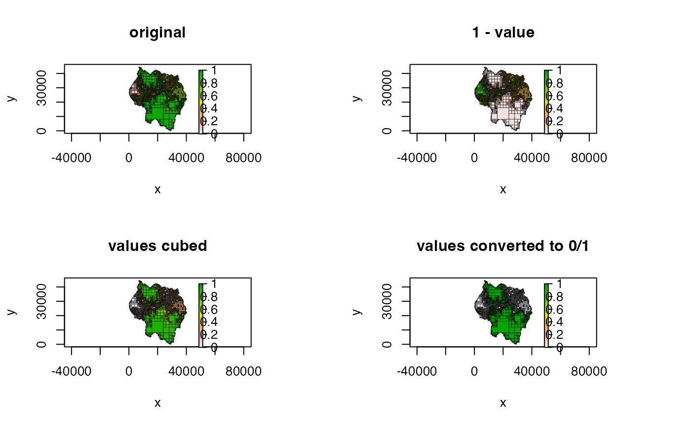

Uses a function to change all cell values of a
Quadtree.
# S4 method for Quadtree,`function` transform_values(x, y)
| x | A |
|---|---|
| y | function; function used on each cell to transform the
value. Must accept a single numeric value and return a single numeric
value. The function must also be able to handle |
no return value
This function applies a function to every single cell, which allows the user to do things like multiply by a scalar, invert the values, etc.
Since a quadtree may contain NA values, y must
be able to handle NAs without throwing an error. For example, if
y contains some control statement such as if(x <
.7), the function must have a separate statement before this to catch
NA values, since having an NA in an if statement is not
allowed. See 'Examples' for an example of this.
It's important to note that this modifies the original quadtree. If you wish
to maintain a version of the original quadtree, use copy
beforehand to make a copy of the quadtree (see 'Examples').
set_values() can be used to set the values of cells
to specified values (rather than transforming the existing values).
library(quadtree) data(habitat) # create a quadtree qt1 <- quadtree(habitat, split_threshold = .1) # copy the quadtree so that we have a copy of the original (since using #'transform_values' modifies the quadtree object) qt2 <- copy(qt1) qt3 <- copy(qt1) qt4 <- copy(qt1) transform_values(qt2, function(x) 1 - x) transform_values(qt3, function(x) x^3) transform_values(qt4, function(x) { if (is.na(x)) return(NA) # make sure to handle NA's if (x < .7) return(0) return(1) }) old_par <- par(mfrow = c(2, 2)) plot(qt1, main = "original", crop = TRUE, na_col = NULL, border_lwd = .3, zlim = c(0, 1)) plot(qt2, main = "1 - value", crop = TRUE, na_col = NULL, border_lwd = .3, zlim = c(0, 1)) plot(qt3, main = "values cubed", crop = TRUE, na_col = NULL, border_lwd = .3, zlim = c(0, 1)) plot(qt4, main = "values converted to 0/1", crop = TRUE, na_col = NULL, border_lwd = .3, zlim = c(0, 1))